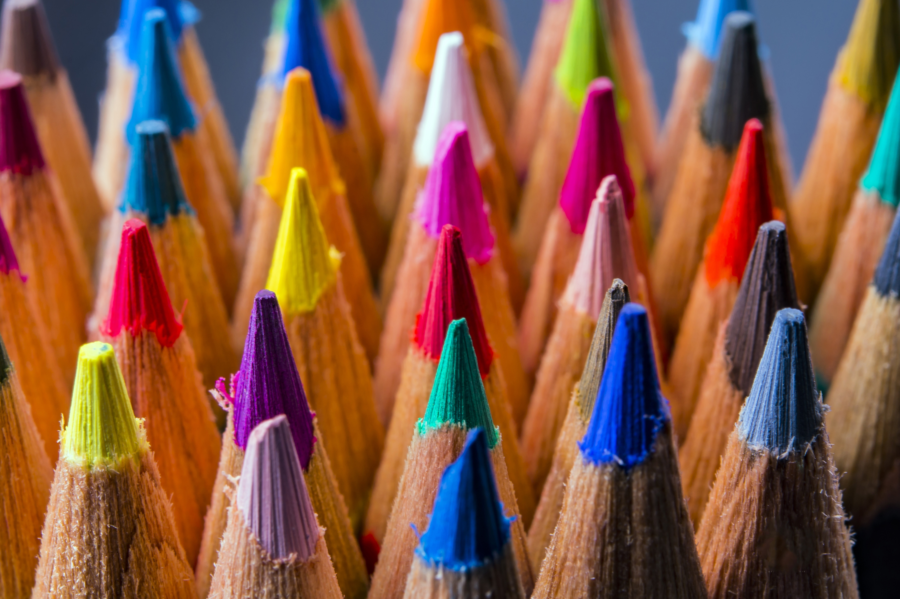

Because of my interest in graphic design, I've read into the use of color in design. Since it can be useful to know what feeling a color can give to someone, a brief description of the most important colors.
RED
The positive properties of red are warmth, energy and excitement. The color stands for masculinity, for physical energy in the form of endurance, strength, passion and lust. There is an association with courage, rebellion and survival.
Some unfavorable properties of red express themselves as anger, annoyance, exhaustion and heated discussion. If you use too much red, it can seem aggressive, provocative and challenging. Because red radiates so much physical energy, it can be an exhausting and overwhelming color.
BLUE
Blue is the color of the sky and the sea. Research has shown time and again that blue is the favorite color, perhaps because it surrounds us. Blue is a psychological ground color and affects us mentally. We associate blue with logical reasoning and clear thinking. The lighter blue tones radiate spiritual peace, serenity and reflection.
Too much blue or the wrong shade of blue can create chill, aloofness and indifference. Although the world loves blue, this color in the wrong context can make us wary or even suspicious.
YELLOW
Yellow is one of the psychological ground colors and is related to the emotions of the nervous system. It has a relatively long wavelength and stimulates emotions, gives confidence and is positive and optimistic. Yellow can boost our self-esteem.
The adverse effects of yellow are exactly opposite. The wrong shade of yellow or too much yellow can cause irritation, anxiety, nervousness and depression. In the worst case, yellow can evoke suicidal feelings.
GREEN
Green appeals to our deepest instincts and reassures us. Where there is green, there is food and water. Green stands for life. Green is in the center of the color spectrum, and the eye hardly needs to adjust to see this color. That's why green is very calming for us, it is a color that represents balance and harmony.
Too much green or the wrong shade can result in stagnation and boredom. Green symbolizes growth and life, but also refers to decay and waste.
